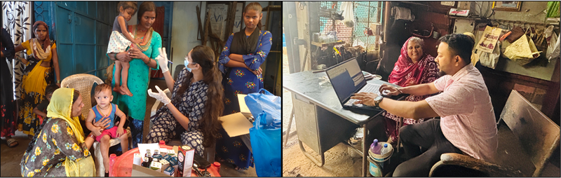

Goa though being a small state, has a very high waste generation. This
is because of the presence of a good amount of industries as well as
high-income levels leading to higher waste generation per capita. Most
of this waste however is processed and managed by semiformal and
unorganized scrap dealers and other informal collectors and
aggregators.
This program aims at mainstreaming this scrap dealer (estimated to be 800 in Goa) into a formally organized system, under pollution control guidelines while maintaining social compliance (no child labor) within the facility. While we are trying to drive a state policy for this, our project also encompasses the hand-holding of 100 scrap dealers of various sizes playing different roles in the recycling supply chain change into the integration of a formalized ecosystem of waste processing and handling. Our scope of work also included working with 1000+ waste workers engaged in these facilities for safe, and dignified livelihoods.
This program aims at mainstreaming this scrap dealer (estimated to be 800 in Goa) into a formally organized system, under pollution control guidelines while maintaining social compliance (no child labor) within the facility. While we are trying to drive a state policy for this, our project also encompasses the hand-holding of 100 scrap dealers of various sizes playing different roles in the recycling supply chain change into the integration of a formalized ecosystem of waste processing and handling. Our scope of work also included working with 1000+ waste workers engaged in these facilities for safe, and dignified livelihoods.

Activities Performed:
-
Phase I :
a) Policy Research and Consultation Committee for Policy Drafting:
b) Survey on selected informal Scrap Dealers, waste management companies, and other supply chain actors
c) Forming a Policy committee on how to integrate the Scrap Dealers (Goa Scenario)
d) Meetings with selected Stakeholders and Consultation Workshops
e) Survey Analysis
f) Legal Consultation on the policy (on labor Laws and Environmental Laws)
g) Final Report: Stakeholder-approved draft on how to formalize and integrate scrap dealers and their workers -
Phase II :
a) Formalization Path: Implementation of the Drafted Policy
b) Detailed Survey on all active informal Scrap Dealers (all 5 identified clusters: min. 500)
c) Initial Meeting with selected and volunteered SDs for step-by-step formalization
d) Awareness Sessions and consultations Workshops on formalization and legal documentation
e) SD's Workers Registration
f) Workers Children Registration: Connection with Schools and Education Centres
g) Health Camps
h) Training on laws & regulations regarding recycling facilities
i) Collection of all necessary documents from selected and volunteered SDs
j) Registration of SDs with the State Pollution Control Board
